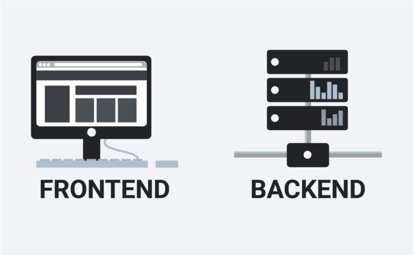

Веб-сторінки — це процес створення вебсторінки із попередньо створеного макету дизайну сайту,
заздалегідь намальованого за допомогою графічних редакторів. Верстка вебсторінки — це структура
вже створеної сторінки.
Бекенд - все, що працює на сервері, тобто «не в браузері» або на комп'ютері,
підключеному до мережі (зазвичай до Інтернету), який відповідає на повідомлення
від інших комп'ютерів.
-
Фрила́нсер
- від англ. freelancer — «вільний списник»
- використовується, але не вживається в законі (не має нормативно-правового закріплення)
і стосується виконання праці без постійного найму.
— популярна назва, термін у
повсякденному мовленні, який часто використовується, але не вживається в законі
(не має нормативно-правового закріплення)[1] і стосується виконання праці без
постійного найму. Це самозайнята особа без персоналу або вільнонайманець.
Види списків:
Нумерований список
Маркований список
Вкладенний список: